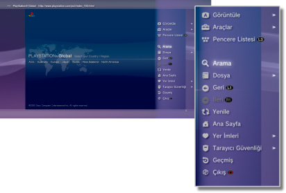

Ağ > Internet tarayıcısının temel kullanımı
Internet tarayıcısının temel kullanımı
Ekranı görüntüleme

(1) |
Sayfa başlığı |
|---|---|
(2) |
Sayfa adresi |
(3) |
SSL simgesi |
(4) |
Meşgul simgesi |
(5) |
Tarayıcı güvenlik simgesi |
(6) |
Bağlantı hedefi adresi |
(7) |
İmleç |
Kaydırma yöntemleri
| Yön düğmeleri | İmleci bağlantıya getirin. |
|---|---|
 düğmesi + yön düğmesi düğmesi + yön düğmesi |
Sayfa sayfa kaydırır. |
| Sağ çubuk | İstenen yönde kaydırır. |
Menüyü kullanma
 düğmesine basma çeşitli işlemleri ve ayarları gerçekleştirebileceğiniz menüyü görüntüler. Menü düğmesine basılarak görüntülenebilir veya gizlenebilir. Menü öğeleri gözat modunda ve pencere modunda farklıdır.
düğmesine basma çeşitli işlemleri ve ayarları gerçekleştirebileceğiniz menüyü görüntüler. Menü düğmesine basılarak görüntülenebilir veya gizlenebilir. Menü öğeleri gözat modunda ve pencere modunda farklıdır.

Bir adres (URL) girme
START (Başlat) düğmesine bastığınızda, adresi girebileceğiniz bir klavye görüntülenecektir. Adresi girdikten sonra  öğesini seçerseniz, klavye kapanır ve girilen adresle ilişkili sayfa açılır.
öğesini seçerseniz, klavye kapanır ve girilen adresle ilişkili sayfa açılır.
Metin kopyalama
Metni Internet tarayıcısındaki bir sayfadan kopyalayabilirsiniz.
1. |
İmleci kopyalamak istediğiniz metnin konumuna taşımak için sol çubuğu kullanın ve sonra |
|---|---|
2. |
|
3. |
Kopyalamak istediğiniz metnin sonunda |
4. |
Görüntülenen menüden [Kopyala] öğesini seçin. |
İpuçları
- Ekran klavyesindeki [Yapıştır] düğmesini kullanarak kopyaladığınız metni yapıştırabilirsiniz.
- Adım 4'te [Arama] öğesini seçerseniz, klavye olarak kopyalanan metni kullanarak bir Internet araması gerçekleştirebilirsiniz.
Bir Web sayfası yazdırma
Bu özelliği kullanmak için, önce  (Ayarlar) > [Yazıcı Ayarları] > [Yazıcı Seçimi] öğesini seçerek bir yazıcı ayarlamanız gerekir.
(Ayarlar) > [Yazıcı Ayarları] > [Yazıcı Seçimi] öğesini seçerek bir yazıcı ayarlamanız gerekir.
1. |
Yazdırmak istediğiniz Web sayfasını açın ve sonra |
|---|---|
2. |
[Dosya] > [Bu Ekranı Yazdır] öğesini seçin. |
3. |
Yazdırma ayarlarını kontrol edin. |
4. |
[Yazdır] öğesini seçin. |
İpucu
Kullanılabilen yazıcılar ülkeye veya bölgeye göre değişir. Daha fazla bilgi için bölgenize ait SIE Web sitesini ziyaret edin.
Birden fazla pencere açma
Aynı anda birden fazla pencere açabilirsiniz. İmleç bağlantının üzerindeyken, bağlantı farklı bir pencerede açılana kadar  düğmesini basılı tutun.
düğmesini basılı tutun.